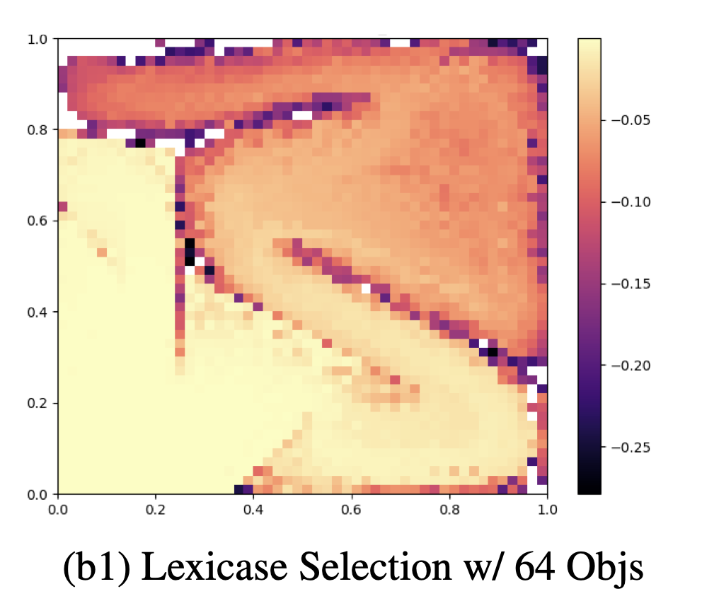
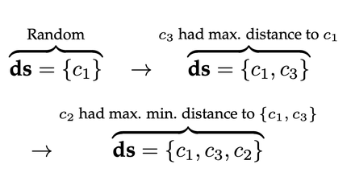

|
Ryan Bahlous-Boldi
(bah-LOOSE BOWL-dee)
I'm a PhD student at MIT researching how intelligence emerges in adaptive artificial systems that evolve and learn. My focus includes enabling agents to adapt in dynamic, open-ended environments, understanding how complex behaviors arise from simple rules, and designing systems that capture the flexibility and generality of human intelligence. Previously, I was an undergrad at UMass Amherst advisied by Lee Spector and Scott Niekum, with whom I worked on lexicase selection, genetic programming, reinforcement learning, preference learning, and lots of other weird things! I've also had the pleasure of collaborating with Stefanos Nikolaidis at the University of Southern California and Katia Sycara at Carnegie Mellon University. My research interests include reinforcement learning, evolutionary computation, deep learning, and cognitive science. My work is supported by the NSF Graduate Research Fellowship. CV / Scholar / GitHub / Publications / Blog Email: [first name] bb [at] mit [dot] edu
|

|


Representative Paperspublished under Ryan Bahlous-Boldi and Ryan Boldi For a full list, see publications or google scholar. * = equal contribution |

|
Dominated Novelty Search: Rethinking Local Competition in Quality-Diversity
Ryan Bahlous-Boldi*, Maxence Faldor*, Luca Grillotti, Hannah Janmohamed, Lisa Coiffard, Lee Spector, Antoine Cully GECCO 2025, 2025 TL;DR: We propose a new class of quality-diversity algorithms that are simply genetic algorithms with fitness augmentations. |

|
Pareto Optimal Learning from Preferences with Hidden Context
Ryan Bahlous-Boldi, Li Ding, Lee Spector, and Scott Niekum RLC 2025 & Pluralistic Alignment Workshop @ NeurIPS 2024, 2024 TL;DR: We frame reward function inference from diverse groups of people as a multi-objective optimization problem. |
|
 |
Solving Deceptive Problems Without Explicit Diversity Maintenance
Ryan Boldi, Li Ding, Lee Spector Agent Learning in Open Endedness @ NeurIPS 2023 & GECCO '24 Companion, 2024 PDF / DOI TL;DR: We present an approach that uses lexicase selection to solve deceptive problems by optimizing a series of defined objectives, implicitly maintaining population diversity. |
|
 |
Informed Down-Sampled Lexicase Selection: Identifying productive training cases for efficient problem solving
Ryan Boldi, Martin Briesch, Dominik Sobania, Alexander Lalejini, Thomas Helmuth, Franz Rothlauf, Charles Ofria, Lee Spector Evolutionary Computation Journal - MIT Press, 2024 PDF / DOI TL;DR: We develop methods to identify the most productive training cases for lexicase selection, improving computational efficiency while maintaining solution quality. |
News |
| Jun 13, 2025 | I'm honored to have been awarded the NSF Graduate Research Fellowship! This fellowship will support my PhD research on how intelligence emerges in adaptive artificial systems. |
| May 9, 2025 | Pareto Optimal Preference Learning (POPL) was accepted to the 2025 Reinforcement Learning Conference (RLC)! |
| Apr 15, 2025 | I'm thrilled to announce that I have committed to the PhD in EECS at MIT! |
| Mar 19, 2025 | Dominated Novelty Search (DNS) was accepted to the 2025 Genetic and Evolutionary Computation Conference (GECCO)! |
| Dec 19, 2024 | Selected as a 2025 HRI Pioneer by the IEEE/ACM International Conference on Human-Robot Interaction. Looking forward to seeing you all in Melbourne! |
| Jun 3, 2024 | Excited to be at Carnegie Mellon University's Robotics Institute this summer working with Katia Sycara on emergent communication between diverse agents in multi-agent reinforcement learning settings. |
| Mar 29, 2024 | Selected as a 2024 Goldwater Scholar! This year, 438 scholarships were awarded to undergrads in the US, with only 30 going to students in the field of Computer Science. |
|
© 2025 Ryan Bahlous-Boldi Last Updated: Nov 2025 Design adapted from Jon Barron |